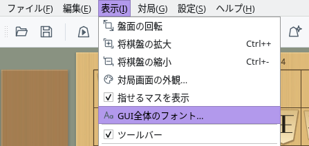
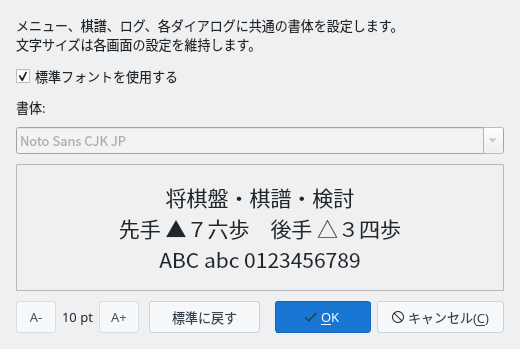
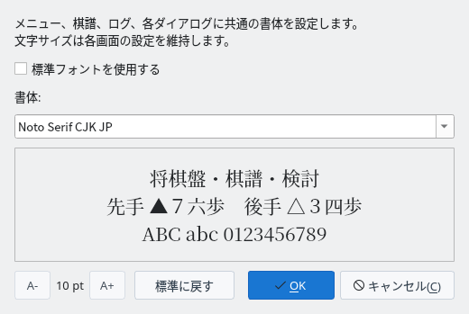
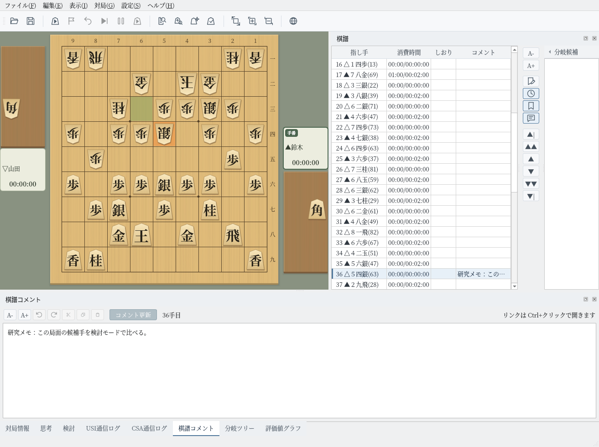

GUI全体のフォント
メニュー・棋譜・ログ・各ダイアログの書体を、まとめて好みのフォントに変えられます
画面はLinuxで撮影したものです。書体の一覧には、お使いのPCに入っているフォントが並びます。
書体を選ぶ
「表示」メニューの「GUI全体のフォント…」で、アプリ全体の書体を設定します
メニューバーの「表示」を開き、「GUI全体のフォント…」を選ぶと、「GUI全体のフォント」ダイアログが開きます。メニュードックの「表示」タブにも同じボタンがあります。
初期状態では「標準フォントを使用する」にチェックが付いていて、表示言語に合わせた標準の書体（下の表）が使われています。


「表示」メニューの「GUI全体のフォント…」


GUI全体のフォント（初期状態）
「標準フォントを使用する」のチェックを外すと、「書体」の一覧から選べるようになります。一覧には、お使いのPCに入っているフォントが並びます。
選んだ書体で下の見本が表示されます。「将棋盤・棋譜・検討」「先手 ▲７六歩 後手 △３四歩」「ABC abc 0123456789」の3行で、漢字・仮名・記号・英数字の見え方を確かめられます。この時点では、アプリの表示はまだ変わりません。


書体に「Noto Serif CJK JP」を選んだところ
「OK」を押すと、すぐにアプリ全体の書体が変わります。再起動は必要ありません。メニュー、棋譜、各パネル（ドック）、ダイアログのほか、盤の周りの対局者名・残り時間・座標も選んだ書体になります。
選んだ書体は自動で保存され、次回の起動時にも使われます。「キャンセル」を押すと、何も変えずに閉じます。


「OK」で確定した後のメイン画面（Noto Serif CJK JP）
標準フォントと文字サイズ
標準の書体には、いつでも戻せます。文字の大きさは各画面の設定のままです
「標準フォントを使用する」にチェックが付いているときは、表示言語とOSに合わせて次の書体を使います。
| 表示言語 | Windows | macOS | Linux |
|---|---|---|---|
| 日本語 | Yu Gothic UI など | ヒラギノ角ゴシック | Noto Sans CJK JP など |
| 中国語（簡体字） | Microsoft YaHei UI | PingFang SC | Noto Sans CJK SC |
| 中国語（繁体字） | Microsoft JhengHei UI | PingFang TC | Noto Sans CJK TC |
| 英語 | 各OSの標準のフォント。棋譜などの日本語は、日本語の標準フォントで表示します | ||
表の書体がPCに入っていないときは、同じ言語向けのほかの書体（日本語なら Meiryo UI や IPAexゴシックなど）を探し、どれもなければOSの標準のフォントを使います。
「標準に戻す」を押すと「標準フォントを使用する」にチェックが付き、一覧も標準の書体に戻ります。「OK」で確定すると、アプリ全体が標準フォントに戻ります。
このダイアログで変わるのは書体だけです。文字の大きさは、棋譜欄やダイアログの「A-」「A+」など、それぞれの画面で設定した大きさのまま変わりません。
ダイアログ左下の「A-」「A+」とその間の数値（pt）は、このダイアログ自体の文字サイズです。文字サイズとダイアログの大きさは次回に引き継がれます。
補足
選んだ書体にない文字や、設定を別のPCへ移したときの扱い
- 足りない文字：選んだ書体に含まれない文字は、標準フォントで補って表示します。英字だけの書体を選んでも、棋譜の漢字や仮名は表示されます。
- 通信ログ：「USI通信ログ」「CSA通信ログ」のような等幅の欄も、選んだ書体で表示します。「標準フォントを使用する」に戻すと、元の等幅フォントに戻ります。
- 書体が入っていないPC：保存した書体がPCに入っていないとき（設定ファイルを別のPCへ移したときなど）は、標準フォントで表示します。ダイアログを開くと「標準フォントを使用する」にチェックが付いています。
- 駒の文字：盤上の駒の文字は駒の画像なので、書体を変えても変わりません。駒の見た目は駒の種類や対局画面の外観で選べます。